Физические ограничения можно использовать путем добавления компонентов в вашу сущность. Это можно сделать, выбрав свою сущность и перейдя в Свойства → Добавить компонент.
Прежде чем начать, пожалуйста, учтите следующее:
- Ограничения актуальны только для физикализованных объектов, поэтому в этих примерах объект имеет компонент твердого тела.
- Ограничения видны только в том случае, если помощники включены.
Точечные ограничения
Добавление ограничения точки к вашему объекту добавит его в точку поворота. Он выглядит как желтая сфера:
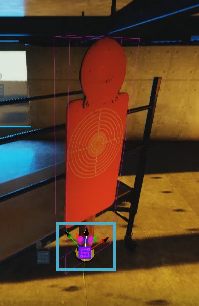
Добавлено ограничение точки
Чтобы лучше видеть помощника по ограничениям, вы можете включить каркасный режим с помощью ALT + Вт или набрав область просмотра.toggle_wireframe_mode в консоли.
В зависимости от того, где должна находиться точка, вокруг которой движется ваш объект, вы можете переместить ее с помощью ограничения точки. Трансформировать → Перевод варианты:
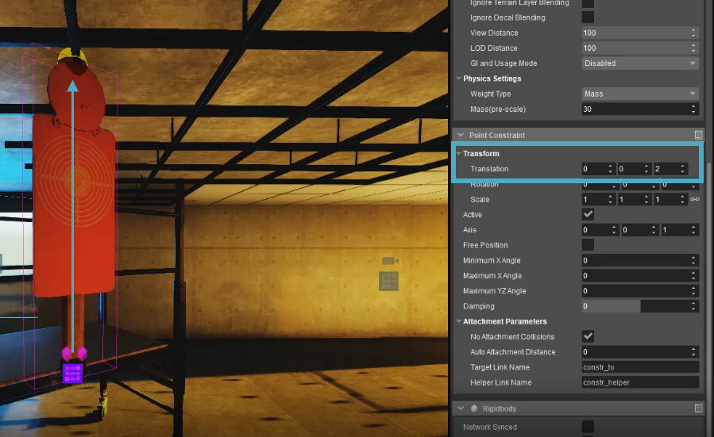
Перемещение ограничения точки
Теперь вы можете включить физику (1) и переместить объект с помощью инструмента «Физика» (2):
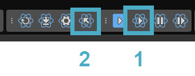
Инструмент физики и включение физики
Вы заметите, что существо будет продолжать раскачиваться вперед и назад с той же скоростью и на то же расстояние. Чтобы убедиться, что он замедляется, что является естественным поведением, вы можете изменить Демпфирование собственность. Обычно используется диапазон от 01 до 0,4.
Добавление ограничения точки предотвращает перемещение объекта со своего положения (как long, как Свободная позиция отключен), позволяя ему вращаться в любом направлении (со значениями по умолчанию 0 назначен на Минимальный угол X и Максимальный угол X).
Как заставить сущность раскачиваться
Если вы просто хотите, чтобы ваша сущность качалась вдоль одной оси, как маятник, настройте следующие параметры:
- Минимальный угол X
- Максимальный угол X
Обратите внимание, что нулевые значения ограничений по умолчанию не означают, что объект имеет нулевую степень перемещения; это значит неограниченный движение. Чтобы разрешить определенный диапазон перемещения, используйте ненулевые значения. Как правило, вам нужно установить Минимальный угол X на отрицательное значение, например -40, и Максимальный угол X тому же значению в положительном диапазоне, например 40. Тогда вы получите такой эффект:
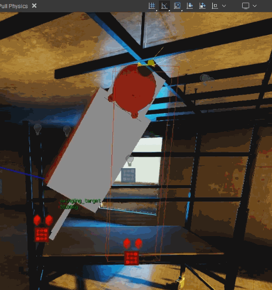
Маятник с точечным ограничением
скручивание
Вы заметили, что объект больше не вращается. Если вы все еще хотите немного изменить его, вы можете изменить Максимальный угол YZ. Когда вы потянете объект, вы увидите конус, прикрепленный к ограничению, указывающий, насколько сильно он будет закручиваться вокруг него:
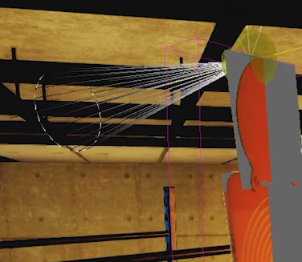
Поворотный конус
Если вы хотите, чтобы он качался вдоль другой оси с тем же диапазоном и поворотом, просто измените Ось.
Также возможно компенсировать ограничение объекта, изменив Перевод значения, чтобы он вращался по дуге вокруг ограничения точки:
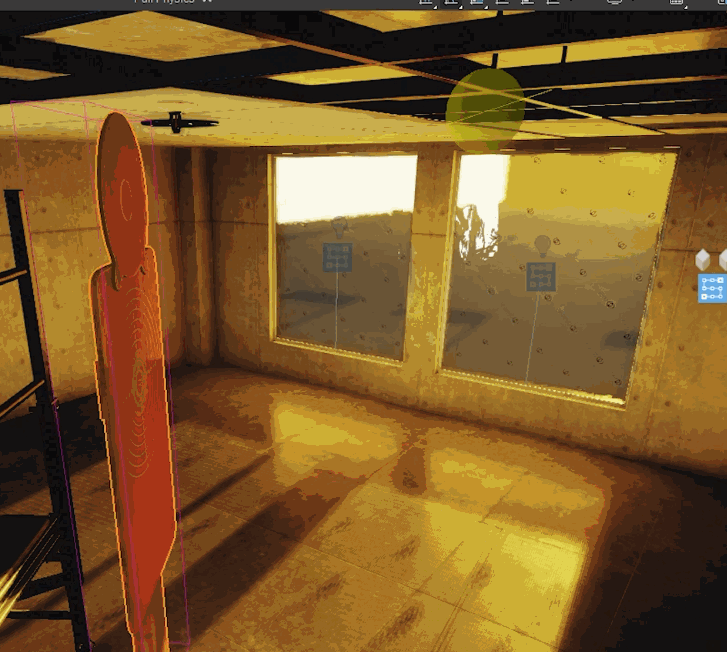
Смещение ограничения точки
Линейные ограничения
Добавление ограничения линии к вашему объекту добавит его в точку поворота, как и ограничение точки. По умолчанию он ограничен по оси Z.
Это заставит прикрепленный объект двигаться по прямой линии, например:
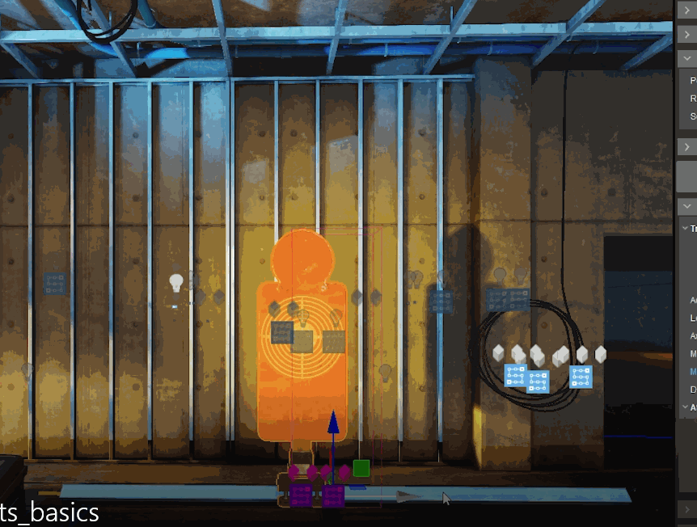
Пример ограничения линии
Желтая линия, которую вы видите на GIF-изображении выше, — это ограничение линии.
Чтобы заставить его двигаться по другой оси, установите З ось к 0 и другая ось 1. В приведенном выше примере оси были настроены следующим образом:
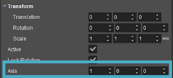
Пример настройки осей
Изменение диапазона
Чтобы изменить, насколько далеко объект перемещается в обе стороны от объекта (конечно, вдоль ограничения линии), измените Минимальный лимит и Максимальный лимит. Помните, что нулевые значения ограничений по умолчанию не означают, что объект не может двигаться; скорее, это означает неограниченный движение. Чтобы разрешить определенный диапазон перемещения, используйте ненулевые значения.
Вращение ограничения линии
Вращение ограничения линии осуществляется не путем изменения свойств вращения, а путем изменения свойств осей.
Однако имейте в виду, что если более чем одной из этих осей присвоено положительное значение, Line Constraint вычислит среднее значение между двумя и нарисует Line Constraint вдоль этой линии.
Например, установив оба Х и Да чтобы 1 изменит их обоих на 0.7071, что соответствует углу 45° по осям X и Y:
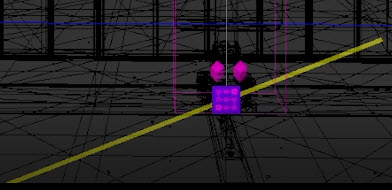
Угол 45 градусов
Создание одного из этих негативов повернет ограничение линии на 180°.
Вы даже можете вращать Line Constraint по 3 осям таким образом:
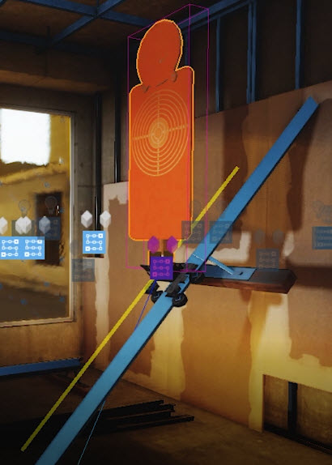
Повернут в 3-х измерениях
Ограничения плоскости
Ограничения плоскости заставляют ваш объект двигаться параллельно плоской поверхности, например земле.
Ограничения плоскости не обязательно должны быть горизонтальными, они также могут располагаться под углом, поэтому объект движется, например, вверх и вниз по холму. Это делается с помощью Вращение собственность.
Вращение вокруг
По умолчанию Минимальный угол поворота поворота и Максимальный угол вращения поворота установлены на -360 и 360 соответственно. Это означает, что объекту разрешено свободно вращаться вокруг своей оси Z:
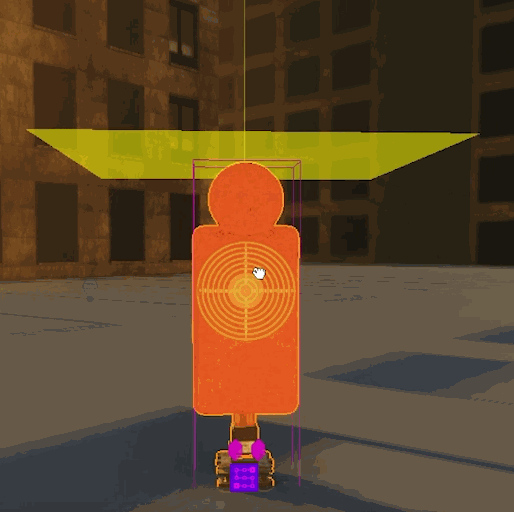
Вращение вокруг оси Z
Установка этих значений на 0 гарантирует, что объект всегда будет обращен в одну и ту же сторону, или можно использовать диапазон значений для ограничения степени поворота.
покачивание
Если вместо вращения вы хотите, чтобы объект раскачивался вокруг своей оси от точки, где ограничение плоскости пересекает линию на ее перпендикулярной оси, введите значение в поле Максимальный угол изгиба собственность. При перемещении его с помощью инструмента «Физика» на этом пересечении отобразится конус, показывающий угол движения:
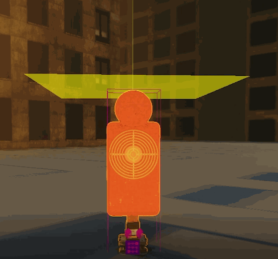
покачивание
Видеоурок
Чтобы посмотреть видеоурок об этих ограничениях, см. ниже.